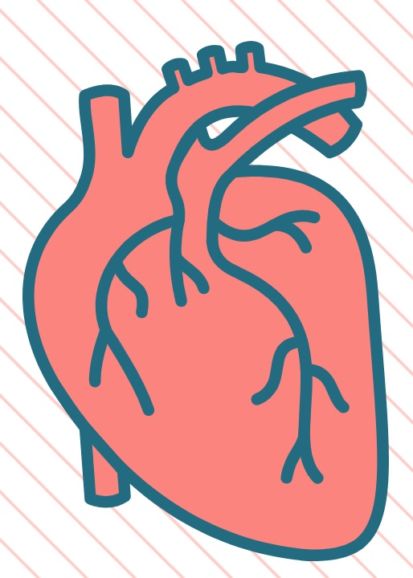

심부전이란?
심부전(HeartFailue)
심장은 강한 근육으로 된 펌프로서 혈액을 전신에 순환시켜 산소와 영양소를 공급하고 몸에서 생긴 이산화탄소와 노폐물을 거두어들여서 우리의 생명을 유지하는 데 가장 중요한 역할을 하는 장기이다. 사람의 심장은 전신 순환을 담당하는 좌측 심장과 폐순환을 담당하는 우측 심장으로 구분되며, 각각은 혈액을 받아들이는 심방과 혈액을 내보내는 심실로 나뉘어진다.
이러한 심장의 기능이 신체가 요구하는 심박출량을 충족시키지 못하는 경우를 심부전이라 한다. 관상동맥 질환이나 고혈압, 심장근육병증, 혹은 심장판막질환 등이 원인이 된다. 심부전은 그 원인이나 병태 생리에 따라 여러 가지로 분류하는데, 간단하게 좌측 심부전과 우측 심부전으로 분류하기도 한다.
이러한 심장의 기능이 신체가 요구하는 심박출량을 충족시키지 못하는 경우를 심부전이라 한다. 관상동맥 질환이나 고혈압, 심장근육병증, 혹은 심장판막질환 등이 원인이 된다. 심부전은 그 원인이나 병태 생리에 따라 여러 가지로 분류하는데, 간단하게 좌측 심부전과 우측 심부전으로 분류하기도 한다.